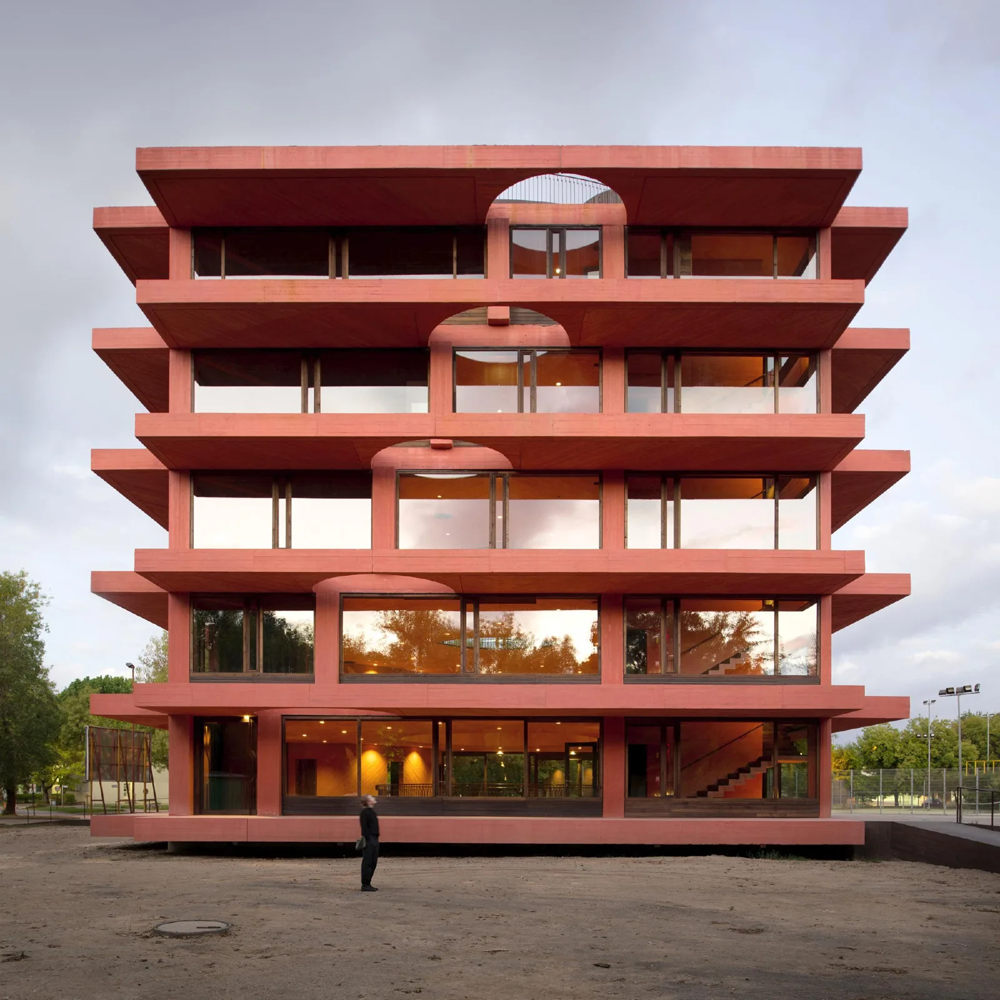
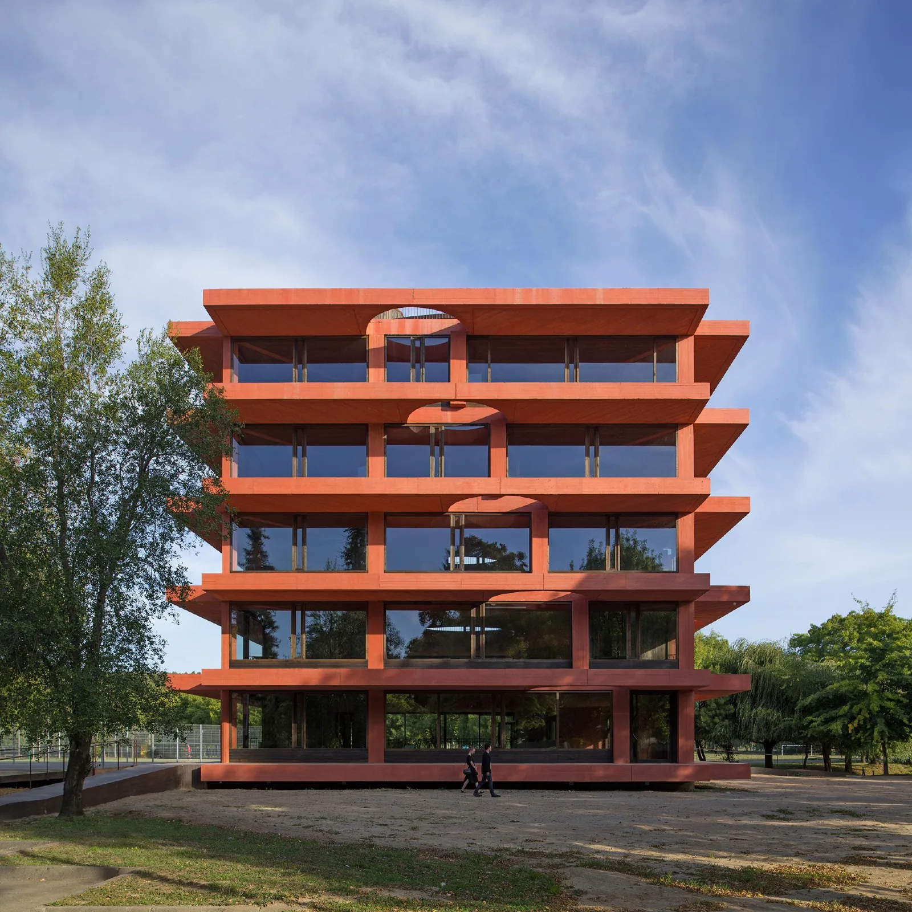
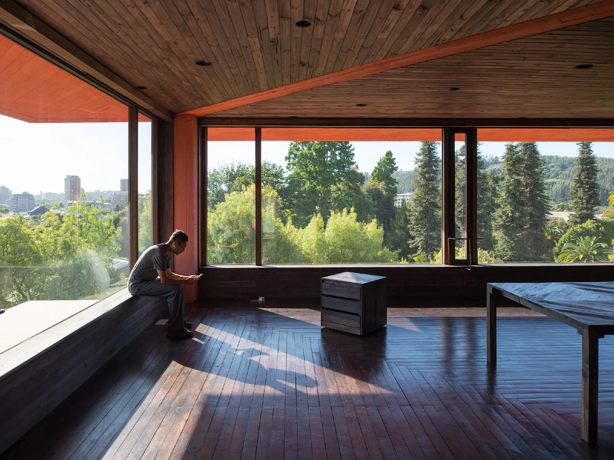
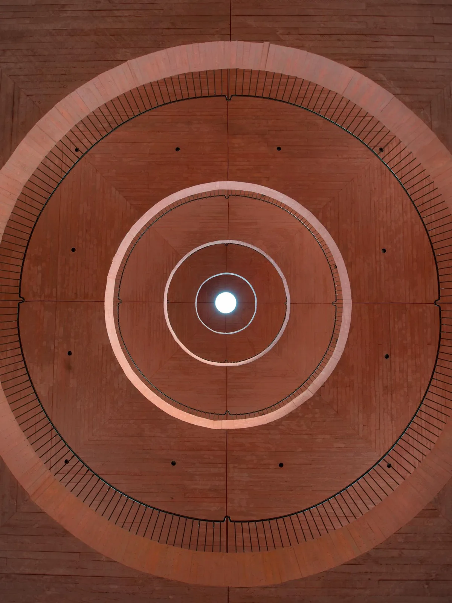
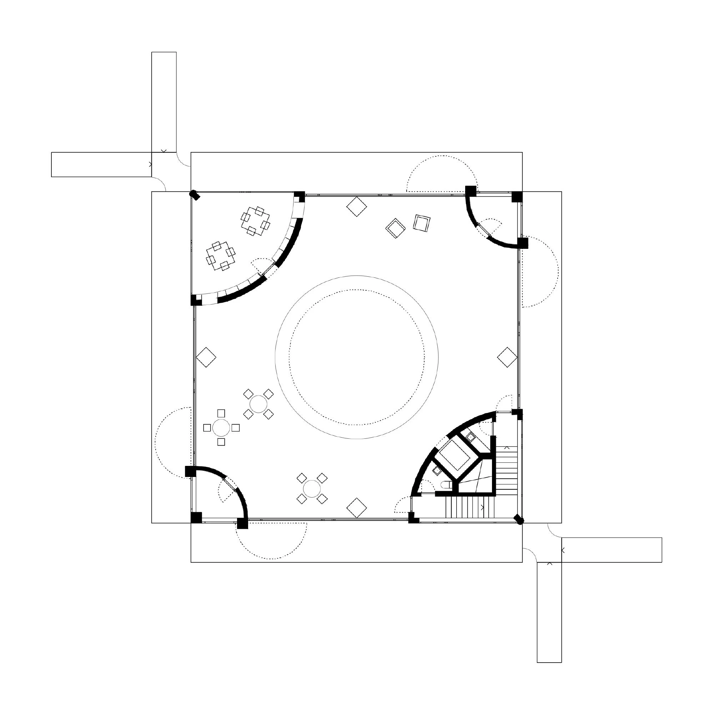
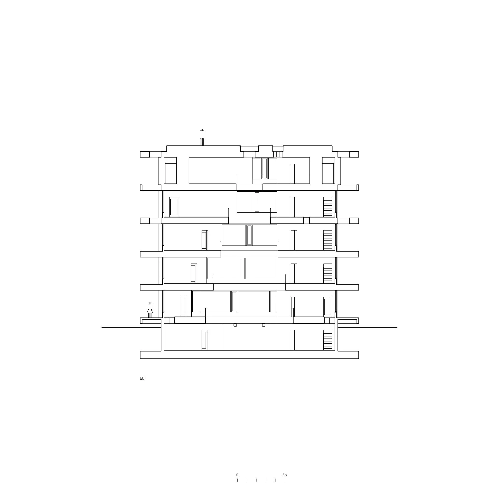
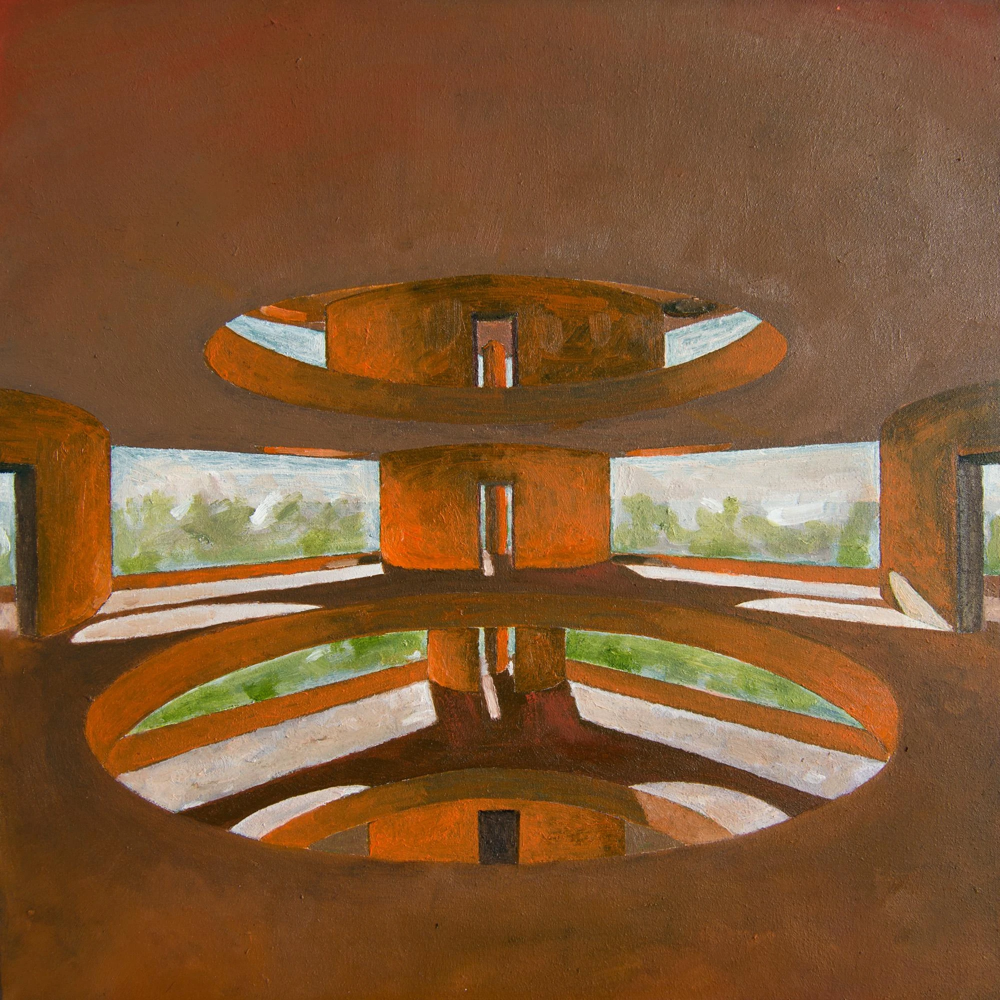
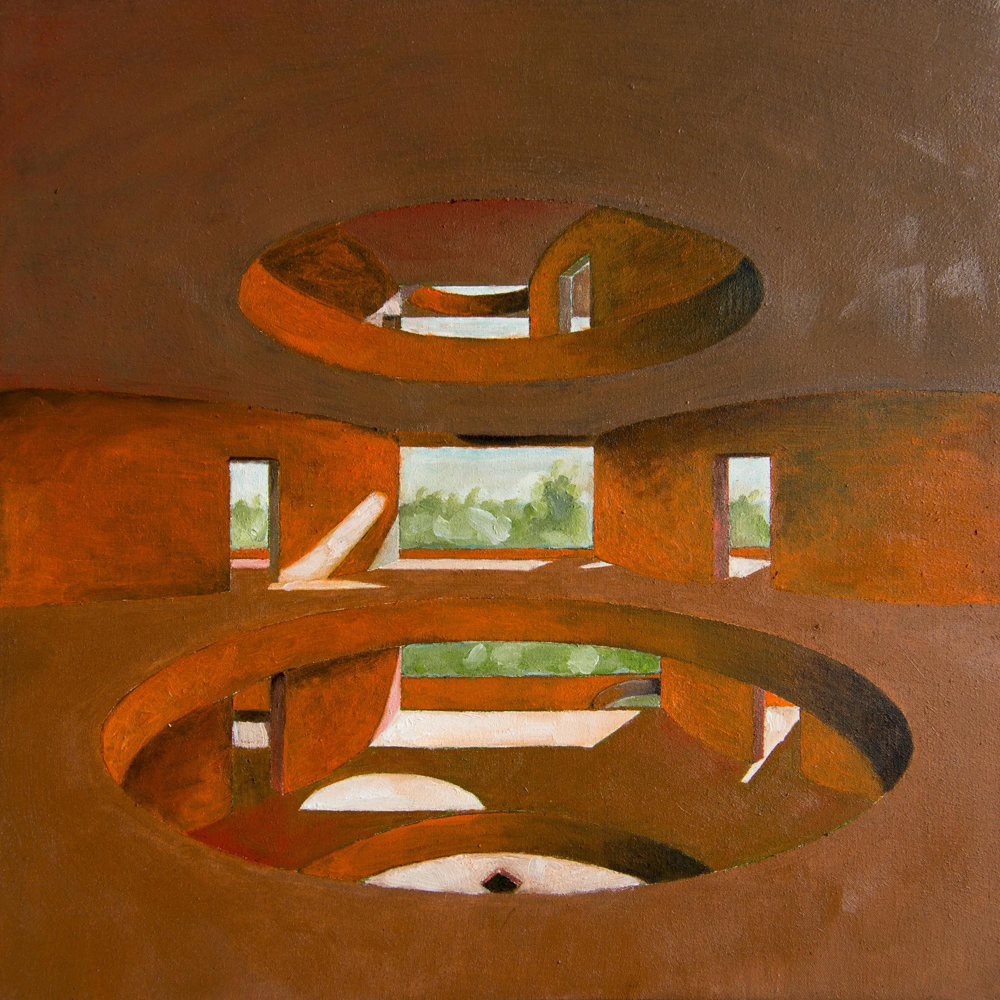
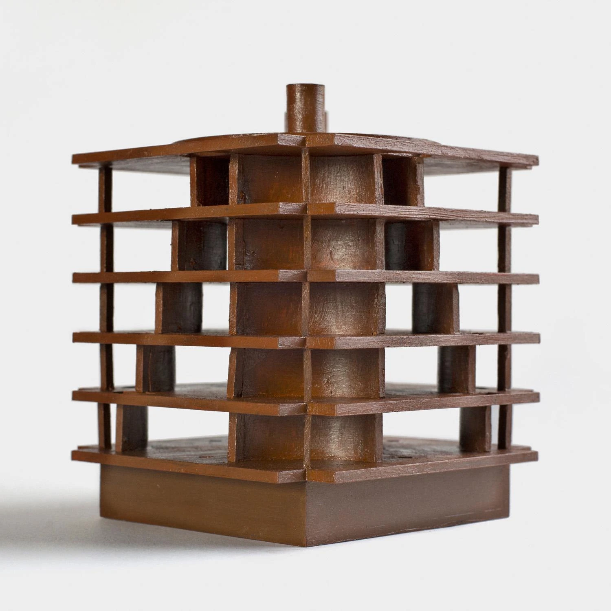

University innovation centre · 2021
INES Innovation Center
Pezo von Ellrichshausen
Concepción, Chile
Researchers, students and entrepreneurs share open halls while quieter corner rooms support individual work. Meeting and exhibition rooms allow ideas to be discussed and made public.
The central circular void becomes smaller on successive floors while the enclosed corner rooms grow. Curved walls simultaneously shape the interior, separate different working conditions and control views and sound, giving a regular external volume an unexpectedly varied section.


Relevant connections
THINK
Open halls and enclosed corner rooms support collective research and concentrated individual work.
SHOW
Dedicated exhibition and meeting rooms let the university community share ideas.
Images and drawings / 09















